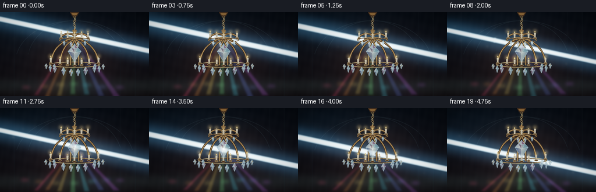
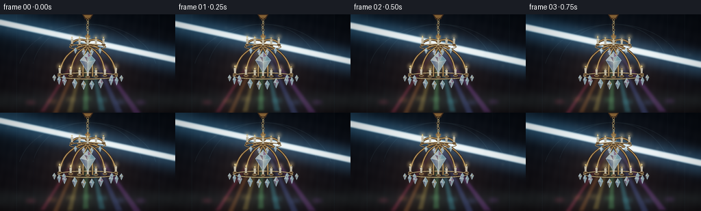
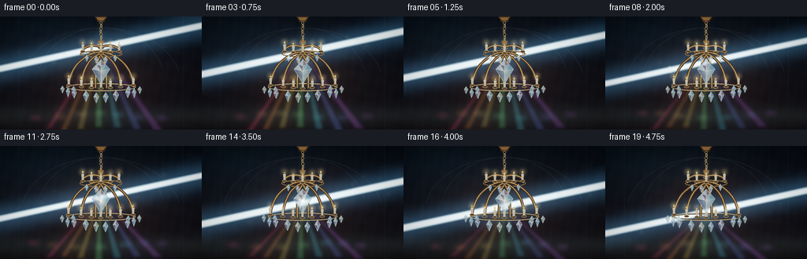
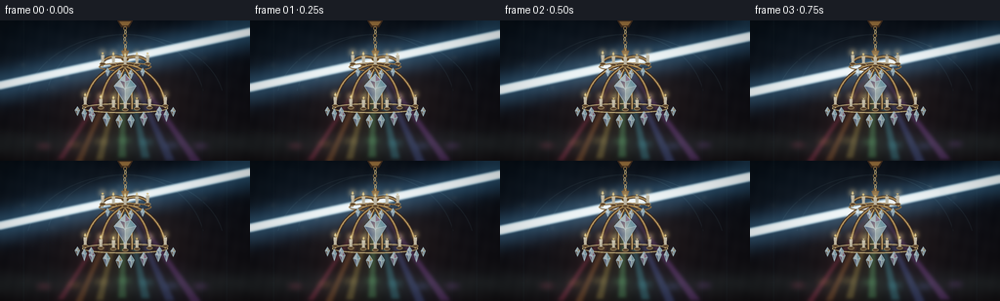

CODING AGENTS AS PIXEL WORLD MODELS
traex/DeepSeek-V4.1-Flash · phygen_087
点击播放 · 原生 RGB 像素
逐轮保存的候选
回放视频、检查图与代码变化。
每份候选均可单独播放。实际图片检查记录在下方工具轨迹中。
候选 01播放与检查图
点击播放 · 原生 RGB 像素


展开代码变化
--- 上一保存版本
+++ 本次保存版本
@@ -0,0 +1,486 @@
+"""Procedural PixelWorld renderer for a light beam passing through a chandelier."""
+
+from __future__ import annotations
+
+import math
+from pathlib import Path
+
+import numpy as np
+from PIL import Image, ImageDraw, ImageFilter
+
+import artifact_io
+
+
+ROOT = Path(__file__).resolve().parent
+WIDTH = 256
+HEIGHT = 144
+FRAMES = 20
+FPS = 4.0
+SS = 4 # Supersampling factor.
+W = WIDTH * SS
+H = HEIGHT * SS
+
+INK = (8, 12, 18)
+BRASS_DARK = (48, 31, 20, 255)
+BRASS = (168, 112, 54, 255)
+BRASS_LIGHT = (246, 198, 112, 255)
+CRYSTAL_EDGE = (171, 229, 255, 235)
+
+
+def xy(x: float, y: float) -> tuple[int, int]:
+ return round(x * SS), round(y * SS)
+
+
+def box(x0: float, y0: float, x1: float, y1: float) -> tuple[int, int, int, int]:
+ return round(x0 * SS), round(y0 * SS), round(x1 * SS), round(y1 * SS)
+
+
+def points(values: list[tuple[float, float]]) -> list[tuple[int, int]]:
+ return [xy(x, y) for x, y in values]
+
+
+def line(draw: ImageDraw.ImageDraw, values, fill, width=1.0, joint="curve"):
+ draw.line(points(values), fill=fill, width=max(1, round(width * SS)), joint=joint)
+
+
+def ellipse(draw: ImageDraw.ImageDraw, bounds, fill=None, outline=None, width=1.0):
+ draw.ellipse(box(*bounds), fill=fill, outline=outline, width=max(1, round(width * SS)))
+
+
+def polygon(draw: ImageDraw.ImageDraw, values, fill=None, outline=None, width=1.0):
+ draw.polygon(points(values), fill=fill, outline=outline, width=max(1, round(width * SS)))
+
+
+def cubic(p0, p1, p2, p3, count=42):
+ output = []
+ for index in range(count):
+ t = index / (count - 1)
+ u = 1.0 - t
+ x = u**3 * p0[0] + 3 * u**2 * t * p1[0] + 3 * u * t**2 * p2[0] + t**3 * p3[0]
+ y = u**3 * p0[1] + 3 * u**2 * t * p1[1] + 3 * u * t**2 * p2[1] + t**3 * p3[1]
+ output.append((x, y))
+ return output
+
+
+def mask_image():
+ return Image.new("L", (W, H), 0)
+
+
+def colored_glow(mask: Image.Image, color, radius: float, strength: float):
+ blurred = mask.filter(ImageFilter.GaussianBlur(radius * SS))
+ alpha = np.asarray(blurred, dtype=np.float32)[..., None] / 255.0
+ rgb = np.asarray(color, dtype=np.float32)[None, None, :]
+ return alpha * rgb * strength
+
+
+def add_light(base: np.ndarray, layer: np.ndarray) -> None:
+ base += layer
+
+
+def make_background(t: float) -> np.ndarray:
+ yy, xx = np.mgrid[0:H, 0:W].astype(np.float32)
+ nx = xx / (W - 1)
+ ny = yy / (H - 1)
+
+ top = np.array([5.0, 9.0, 15.0], dtype=np.float32)
+ bottom = np.array([16.0, 13.0, 16.0], dtype=np.float32)
+ field = top[None, None, :] * (1.0 - ny[..., None]) + bottom[None, None, :] * ny[..., None]
+
+ warm = np.exp(-(((nx - 0.50) / 0.38) ** 2 + ((ny - 0.50) / 0.46) ** 2) * 2.0)
+ field += warm[..., None] * np.array([15.0, 7.0, 2.5], dtype=np.float32)
+
+ cool = np.exp(-(((nx - 0.18) / 0.52) ** 2 + ((ny - 0.17) / 0.35) ** 2) * 1.7)
+ field += cool[..., None] * np.array([2.0, 7.0, 10.0], dtype=np.float32)
+
+ grain = (
+ np.sin(xx * 0.071 + yy * 0.039)
+ + np.sin(xx * 0.023 - yy * 0.083 + 1.9)
+ + np.sin(xx * 0.151 + yy * 0.017 + 0.7)
+ ) / 3.0
+ field += grain[..., None] * 1.6
+
+ radius = np.sqrt(((nx - 0.5) * 1.05) ** 2 + ((ny - 0.48) * 1.12) ** 2)
+ vignette = np.clip(1.0 - 0.76 * np.maximum(radius - 0.22, 0.0) ** 1.35, 0.18, 1.0)
+ field *= vignette[..., None]
+
+ # Quiet architectural arcs and wall seams, visible only at the edge of the glow.
+ architecture = Image.new("RGBA", (W, H), (0, 0, 0, 0))
+ draw = ImageDraw.Draw(architecture)
+ for cx, rx in ((128, 102), (128, 82)):
+ draw.arc(box(cx - rx, 14, cx + rx, 160), 192, 348, fill=(32, 43, 50, 78), width=SS)
+ draw.line(points([(24, 0), (24, 144)]), fill=(19, 28, 34, 60), width=SS)
+ draw.line(points([(232, 0), (232, 144)]), fill=(19, 28, 34, 60), width=SS)
+ for x in (49, 207):
+ draw.line(points([(x, 0), (x, 144)]), fill=(12, 19, 24, 38), width=SS)
+
+ arch = np.asarray(architecture, dtype=np.float32)
+ a = arch[..., 3:4] / 255.0
+ field = field * (1.0 - a) + arch[..., :3] * a
+
+ # A barely-there horizontal sheen gives the empty room depth.
+ floor_glow = np.exp(-((ny - 0.88) / 0.09) ** 2) * 3.0
+ field += floor_glow[..., None] * np.array([3.0, 4.2, 4.0], dtype=np.float32)
+ return field
+
+
+def draw_chain(draw: ImageDraw.ImageDraw, glow: ImageDraw.ImageDraw):
+ cx = 128
+ polygon(draw, [(120, 0), (136, 0), (132, 7), (124, 7)], fill=BRASS_DARK)
+ polygon(draw, [(122, 1), (134, 1), (131, 5), (125, 5)], fill=(135, 87, 41, 255))
+ for index, y in enumerate(np.arange(8, 31, 3.7)):
+ sway = 0.35 * math.sin(index * 1.7)
+ if index % 2 == 0:
+ ellipse(draw, (cx - 1.8 + sway, y - 2.0, cx + 1.8 + sway, y + 2.0),
+ outline=BRASS, width=0.85)
+ else:
+ ellipse(draw, (cx - 1.1 + sway, y - 2.2, cx + 1.1 + sway, y + 2.2),
+ outline=BRASS_LIGHT, width=0.7)
+ ellipse(glow, (cx - 1.0, y - 1.0, cx + 1.0, y + 1.0), fill=65)
+
+
+def draw_arm(draw: ImageDraw.ImageDraw, start, control1, control2, end, strength=1.0):
+ curve = cubic(start, control1, control2, end)
+ line(draw, curve, BRASS_DARK, 3.2)
+ line(draw, curve, BRASS, 1.65 * strength)
+ line(draw, [(x, y - 0.35) for x, y in curve], BRASS_LIGHT, 0.52 * strength)
+
+
+def draw_candle(draw: ImageDraw.ImageDraw, glow: ImageDraw.ImageDraw, x, y, t, phase):
+ # Cup, wax, wick, and flame.
+ ellipse(draw, (x - 3.2, y - 1.0, x + 3.2, y + 2.0), fill=(71, 47, 28, 255),
+ outline=BRASS_LIGHT, width=0.55)
+ polygon(draw, [(x - 1.6, y - 8.5), (x + 1.6, y - 8.5), (x + 1.3, y - 1.1),
+ (x - 1.3, y - 1.1)], fill=(226, 207, 166, 255))
+ line(draw, [(x, y - 9.3), (x, y - 10.2)], (55, 35, 22, 255), 0.55)
+
+ flicker = 0.88 + 0.12 * math.sin(t * math.tau * 2.2 + phase)
+ flame = [(x, y - 13.2 * flicker), (x - 1.25, y - 10.4), (x, y - 9.0),
+ (x + 1.25, y - 10.4)]
+ polygon(draw, flame, fill=(255, 174, 62, 240))
+ polygon(draw, [(x, y - 11.9 * flicker), (x - 0.55, y - 10.2),
+ (x, y - 9.7), (x + 0.55, y - 10.2)], fill=(255, 246, 194, 255))
+ ellipse(glow, (x - 3.3, y - 14.4, x + 3.3, y - 8.0), fill=round(138 * flicker))
+ ellipse(glow, (x - 0.75, y - 12.0, x + 0.75, y - 9.2), fill=255)
+
+
+def draw_crystal(draw: ImageDraw.ImageDraw, glow: ImageDraw.ImageDraw, x, y, w, h,
+ phase, t, tint="ice", intensity=1.0):
+ top = (x, y - h / 2)
+ left = (x - w / 2, y - h * 0.10)
+ right = (x + w / 2, y - h * 0.10)
+ bottom = (x, y + h / 2)
+ inner = (x, y - h * 0.02)
+
+ if tint == "rose":
+ left_fill = (153, 101, 137, 174)
+ right_fill = (101, 75, 113, 168)
+ elif tint == "gold":
+ left_fill = (194, 155, 93, 176)
+ right_fill = (107, 83, 65, 164)
+ else:
+ left_fill = (113, 181, 205, 174)
+ right_fill = (82, 105, 155, 168)
+
+ polygon(draw, [top, left, inner], fill=(219, 243, 255, 190), outline=CRYSTAL_EDGE, width=0.42)
+ polygon(draw, [top, right, inner], fill=left_fill, outline=CRYSTAL_EDGE, width=0.42)
+ polygon(draw, [left, bottom, inner], fill=right_fill, outline=CRYSTAL_EDGE, width=0.38)
+ polygon(draw, [right, bottom, inner], fill=(160, 205, 225, 156), outline=CRYSTAL_EDGE, width=0.38)
+ line(draw, [top, bottom], (235, 251, 255, 155), 0.32)
+ ellipse(glow, (x - w * 0.24, y - h * 0.16, x + w * 0.24, y + h * 0.16),
+ fill=round(52 * intensity))
+
+
+def draw_star(glow: ImageDraw.ImageDraw, x, y, size, strength, angle=0.0):
+ if strength <= 0.01:
+ return
+ values = 255 * min(1.0, strength)
+ ca, sa = math.cos(angle), math.sin(angle)
+ long_axis = [(x - size * ca, y - size * sa), (x + size * ca, y + size * sa)]
+ short_axis = [(x + size * 0.48 * sa, y - size * 0.48 * ca),
+ (x - size * 0.48 * sa, y + size * 0.48 * ca)]
+ line(glow, long_axis, round(values), max(0.35, size * 0.06))
+ line(glow, short_axis, round(values * 0.8), max(0.3, size * 0.045))
+ ellipse(glow, (x - size * 0.12, y - size * 0.12, x + size * 0.12, y + size * 0.12),
+ fill=round(values))
+
+
+def draw_chandelier(t: float, beam_y: float):
+ rgba = Image.new("RGBA", (W, H), (0, 0, 0, 0))
+ draw = ImageDraw.Draw(rgba)
+ glow_mask = mask_image()
+ glow = ImageDraw.Draw(glow_mask)
+
+ sway = 0.30 * math.sin(t * math.tau + 0.4)
+ draw_chain(draw, glow)
+
+ # Central carved stem.
+ line(draw, [(128 + sway, 29), (128 + sway, 42)], BRASS_DARK, 4.0)
+ line(draw, [(128 + sway, 29), (128 + sway, 42)], BRASS, 2.0)
+ polygon(draw, [(124 + sway, 31), (132 + sway, 31), (130 + sway, 36),
+ (126 + sway, 36)], fill=(109, 72, 38, 255))
+ ellipse(draw, (124 + sway, 37, 132 + sway, 42), fill=(74, 48, 27, 255),
+ outline=BRASS_LIGHT, width=0.55)
+
+ # Upper and lower rings in perspective.
+ ellipse(draw, (101, 43, 155, 52), outline=(59, 41, 29, 220), width=1.8)
+ ellipse(draw, (101, 43, 155, 52), outline=BRASS, width=0.9)
+ ellipse(draw, (84, 85, 172, 95), outline=(52, 37, 27, 230), width=2.2)
+ ellipse(draw, (84, 85, 172, 95), outline=BRASS_LIGHT, width=1.0)
+
+ # Sweeping arms; six lower arms carry the outer silhouette.
+ upper = [
+ ((128, 39), (116, 34), (103, 39), (104, 47)),
+ ((128, 39), (140, 34), (153, 39), (152, 47)),
+ ]
+ lower = [
+ ((128, 45), (105, 47), (87, 67), (87, 90)),
+ ((128, 45), (151, 47), (169, 67), (169, 90)),
+ ((128, 47), (112, 52), (103, 71), (103, 90)),
+ ((128, 47), (144, 52), (153, 71), (153, 90)),
+ ((128, 49), (121, 57), (121, 77), (121, 91)),
+ ((128, 49), (135, 57), (135, 77), (135, 91)),
+ ]
+ for arm in upper:
+ draw_arm(draw, *arm, strength=0.9)
+ for arm in lower:
+ draw_arm(draw, *arm, strength=0.95)
+
+ # Candle tiers.
+ top_candles = [(105, 44), (116, 45), (128, 46), (140, 45), (151, 44)]
+ low_candles = [(87, 87), (103, 89), (116, 90), (128, 91),
+ (140, 90), (153, 89), (169, 87)]
+ for index, (x, y) in enumerate(top_candles):
+ draw_candle(draw, glow, x + sway * 0.4, y, t, index * 0.83)
+ for index, (x, y) in enumerate(low_candles):
+ draw_candle(draw, glow, x + sway * 0.8, y, t, index * 0.67 + 0.9)
+
+ # Small crystal drops around both rings.
+ top_drops = [(110, 53, 4.5, 9, "ice"), (122, 55, 5.0, 10, "rose"),
+ (134, 55, 5.0, 10, "gold"), (146, 53, 4.5, 9, "ice")]
+ low_drops = [(94, 98, 6.5, 13, "rose"), (109, 101, 7.5, 15, "ice"),
+ (122, 103, 7.0, 14, "gold"), (134, 103, 7.0, 14, "ice"),
+ (147, 101, 7.5, 15, "rose"), (162, 98, 6.5, 13, "ice")]
+ for index, (x, y, cw, ch, tint) in enumerate(top_drops):
+ bob = 0.35 * math.sin(t * math.tau * 1.4 + index)
+ proximity = math.exp(-((beam_y - y) / 7.5) ** 2)
+ draw_crystal(draw, glow, x + sway, y + bob, cw, ch, index,
+ t, tint, 0.75 + 1.7 * proximity)
+ for index, (x, y, cw, ch, tint) in enumerate(low_drops):
+ bob = 0.55 * math.sin(t * math.tau * 1.1 + index * 0.8)
+ proximity = math.exp(-((beam_y - y) / 8.0) ** 2)
+ draw_crystal(draw, glow, x + sway, y + bob, cw, ch, index,
+ t, tint, 0.8 + 2.1 * proximity)
+
+ # Outer drops add a recognizable chandelier silhouette.
+ for side in (-1, 1):
+ for index, (dx, dy, h) in enumerate(((0, 97, 13), (7, 93, 10), (-7, 93, 10))):
+ x = 128 + side * (42 + dx)
+ bob = 0.7 * math.sin(t * math.tau + index + side)
+ draw_crystal(draw, glow, x + sway * 1.2, dy + bob, 5.2, h, index,
+ t, "ice" if index % 2 == 0 else "gold",
+ 0.9 + math.exp(-((beam_y - dy) / 9.0) ** 2))
+
+ # The central crystal is the visual and refractive heart of the fixture.
+ central_y = 70.0
+ central_hit = math.exp(-((beam_y - central_y) / 7.5) ** 2)
+ draw_crystal(draw, glow, 128 + sway, central_y, 23, 31, 0.5, t, "ice",
+ 2.0 + 4.2 * central_hit)
+ # A second, smaller crystal behind it.
+ draw_crystal(draw, glow, 128 + sway, 63, 11, 17, 1.5, t, "rose",
+ 1.0 + central_hit)
+
+ glow_rgb = colored_glow(glow_mask, (255, 210, 123), 2.2, 0.62)
+ halo_rgb = colored_glow(glow_mask, (73, 175, 220), 7.5, 0.20)
+ rgba_arr = np.asarray(rgba, dtype=np.float32)
+ alpha = rgba_arr[..., 3:4] / 255.0
+ fg_rgb = rgba_arr[..., :3]
+ return fg_rgb, alpha, glow_rgb, halo_rgb
+
+
+def beam_geometry(t: float):
+ # The beam crosses the fixture from upper-left to lower-right while its
+ # intersection point sweeps from the upper tier to the lower crystals.
+ center_y = 39.0 + 45.0 * t
+ slope = 0.215
+ x0, x1 = -16.0, 272.0
+ y0 = center_y + slope * (x0 - 128)
+ y1 = center_y + slope * (x1 - 128)
+ return center_y, slope, x0, y0, x1, y1
+
+
+def make_beam(t: float, center_y: float, slope: float):
+ core_mask = mask_image()
+ halo_mask = mask_image()
+ core = ImageDraw.Draw(core_mask)
+ halo = ImageDraw.Draw(halo_mask)
+ cx, cy = 128.0, center_y
+
+ width = 3.1 + 0.45 * math.sin(t * math.tau * 1.5)
+ dx = 150.0
+ dy = slope * dx
+ length = math.hypot(dx, dy)
+ nx, ny = -dy / length, dx / length
+ left = (cx - dx, cy - dy)
+ right = (cx + dx, cy + dy)
+
+ for target, w, value in ((halo, 18.0, 52), (halo, 7.0, 110), (core, width, 255)):
+ beam_poly = [
+ (left[0] + nx * w, left[1] + ny * w),
+ (right[0] + nx * w, right[1] + ny * w),
+ (right[0] - nx * w, right[1] - ny * w),
+ (left[0] - nx * w, left[1] - ny * w),
+ ]
+ polygon(target, beam_poly, fill=value)
+
+ # An intersection bloom and a few hotter knots make the beam feel volumetric.
+ hit_x = cx
+ hit_y = cy
+ ellipse(halo, (hit_x - 18, hit_y - 18, hit_x + 18, hit_y + 18), fill=72)
+ ellipse(halo, (hit_x - 7, hit_y - 7, hit_x + 7, hit_y + 7), fill=145)
+ ellipse(core, (hit_x - 2.2, hit_y - 2.2, hit_x + 2.2, hit_y + 2.2), fill=255)
+
+ for knot in (0.34, 0.56, 0.74):
+ x = -16 + (272 + 16) * knot
+ y = cy + slope * (x - cx)
+ r = 2.2 + 1.3 * math.sin(t * math.tau * 1.7 + knot * 8)
+ ellipse(core, (x - r, y - r, x + r, y + r), fill=235)
+
+ core_rgb = colored_glow(core_mask, (194, 235, 255), 1.1, 2.35)
+ halo_rgb = colored_glow(halo_mask, (67, 153, 220), 5.8, 0.78)
+ wide_rgb = colored_glow(halo_mask, (32, 73, 113), 17.0, 0.28)
+ return core_rgb + halo_rgb + wide_rgb
+
+
+def make_dispersion(t: float, center_y: float):
+ fan_mask = mask_image()
+ fan = ImageDraw.Draw(fan_mask)
+ cx, cy = 128.0, center_y
+ pulse = 0.88 + 0.12 * math.sin(t * math.tau * 2.0)
+
+ colors = [
+ (255, 62, 105),
+ (255, 137, 50),
+ (255, 213, 82),
+ (111, 255, 134),
+ (67, 224, 255),
+ (91, 122, 255),
+ (199, 91, 255),
+ ]
+ output = np.zeros((H, W, 3), dtype=np.float32)
+ targets = [44, 62, 81, 102, 125, 149, 174, 200]
+ for index, color in enumerate(colors):
+ target_x = targets[index + 1]
+ target_y = 142 + 2 * math.sin(index * 1.4 + t * math.tau)
+ width_at_end = 3.0 + index * 0.28
+ tri = [
+ (cx - 1.0, cy),
+ (target_x - width_at_end, target_y),
+ (target_x + width_at_end, target_y),
+ ]
+ fan.polygon(points(tri), fill=round(128 * pulse))
+ ray_layer = colored_glow(fan_mask, color, 1.6, 0.34)
+ output += ray_layer
+ fan.rectangle((0, 0, W, H), fill=0)
+
+ # A soft chromatic wash beneath the central crystal.
+ wash_mask = mask_image()
+ wash = ImageDraw.Draw(wash_mask)
+ for index, color in enumerate(colors):
+ target_x = targets[index + 1]
+ tri = [(cx - 2, cy), (target_x - 5.5, 144), (target_x + 5.5, 144)]
+ wash.polygon(points(tri), fill=110)
+ output += colored_glow(wash_mask, color, 7.5, 0.13)
+ wash.rectangle((0, 0, W, H), fill=0)
+
+ # Caustic pools along the floor.
+ for index, color in enumerate(colors):
+ x = 45 + index * 27 + 5 * math.sin(t * math.tau + index)
+ y = 126 + 3 * math.cos(index * 1.1 + t * math.tau)
+ pool = mask_image()
+ pool_draw = ImageDraw.Draw(pool)
+ ellipse(pool_draw, (x - 7, y - 2, x + 7, y + 2), fill=175)
+ output += colored_glow(pool, color, 2.8, 0.24)
+
+ return output
+
+
+def make_dust(t: float, center_y: float, slope: float):
+ mask = mask_image()
+ draw = ImageDraw.Draw(mask)
+ for index in range(34):
+ seed = (index * 37 + 11) % 101
+ x = 13 + (seed / 100.0) * 230
+ base_y = 14 + ((index * 53 + 19) % 103) / 103.0 * 111
+ beam_line = center_y + slope * (x - 128)
+ near = math.exp(-((base_y - beam_line) / 17.0) ** 2)
+ y = base_y + 2.2 * math.sin(t * math.tau * 0.75 + index * 1.37)
+ x += 1.3 * math.sin(t * math.tau * 0.5 + index * 0.9)
+ r = 0.35 + 0.55 * near + 0.18 * (index % 3)
+ value = round(30 + 150 * near)
+ ellipse(draw, (x - r, y - r, x + r, y + r), fill=value)
+ warm = colored_glow(mask, (255, 221, 169), 1.6, 0.25)
+ cool = colored_glow(mask, (116, 213, 255), 5.0, 0.10)
+ return warm + cool
+
+
+def make_sparkles(t: float, center_y: float):
+ mask = mask_image()
+ draw = ImageDraw.Draw(mask)
+ crystal_points = [
+ (110, 53, 0.2), (122, 55, 1.1), (134, 55, 2.0), (146, 53, 2.8),
+ (94, 98, 0.7), (109, 101, 1.4), (122, 103, 2.2), (134, 103, 3.0),
+ (147, 101, 3.7), (162, 98, 4.5), (128, 70, 0.0),
+ ]
+ for index, (x, y, phase) in enumerate(crystal_points):
+ proximity = math.exp(-((center_y - y) / 9.0) ** 2)
+ glint = (0.22 + 1.3 * proximity) * (0.58 + 0.42 * math.sin(t * math.tau * 1.8 + phase))
+ size = 1.2 + 5.0 * max(0.0, glint) * (1.2 if index == 10 else 0.65)
+ draw_star(draw, x, y, size, max(0.0, glint), angle=0.25 + index * 0.17)
+
+ white = colored_glow(mask, (220, 246, 255), 0.65, 1.55)
+ cyan = colored_glow(mask, (72, 191, 255), 3.0, 0.30)
+ warm = colored_glow(mask, (255, 196, 105), 8.0, 0.08)
+ return white + cyan + warm
+
+
+def render_frame(frame_index: int) -> np.ndarray:
+ t = frame_index / (FRAMES - 1)
+ center_y, slope, x0, y0, x1, y1 = beam_geometry(t)
+ field = make_background(t)
+
+ # The beam and its chromatic consequences are all additive light.
+ add_light(field, make_beam(t, center_y, slope))
+ add_light(field, make_dispersion(t, center_y))
+
+ fg_rgb, alpha, chandelier_glow, chandelier_halo = draw_chandelier(t, center_y)
+ field = field * (1.0 - alpha) + fg_rgb * alpha
+ add_light(field, chandelier_glow)
+ add_light(field, chandelier_halo)
+
+ # A short hot segment above the fixture keeps the beam readable as it enters.
+ entry = make_sparkles(t, center_y)
+ add_light(field, entry)
+ add_light(field, make_dust(t, center_y, slope))
+
+ # Gentle tone curve and final vignette.
+ field = np.maximum(field, 0.0)
+ field = 255.0 * (1.0 - np.exp(-field / 165.0))
+ yy, xx = np.mgrid[0:H, 0:W].astype(np.float32)
+ nx = xx / (W - 1)
+ ny = yy / (H - 1)
+ vignette = np.clip(1.0 - 0.34 * (((nx - 0.5) * 1.2) ** 2 + ((ny - 0.5) * 1.05) ** 2), 0.58, 1.0)
+ field *= vignette[..., None]
+
+ image = Image.fromarray(np.clip(field, 0, 255).astype(np.uint8), "RGB")
+ image = image.resize((WIDTH, HEIGHT), Image.Resampling.LANCZOS)
+ return np.asarray(image, dtype=np.uint8)
+
+
+def main() -> None:
+ frames = np.stack([render_frame(index) for index in range(FRAMES)])
+ artifact_io.save(frames, ROOT)
+ print(f"saved {FRAMES} frames to {ROOT}")
+
+
+if __name__ == "__main__":
+ main()
候选 02播放与检查图
点击播放 · 原生 RGB 像素


展开代码变化
--- 上一保存版本
+++ 本次保存版本
@@ -298,10 +298,10 @@
def beam_geometry(t: float):
- # The beam crosses the fixture from upper-left to lower-right while its
- # intersection point sweeps from the upper tier to the lower crystals.
+ # The beam enters from upper-left and meets the fixture from its far side.
+ # Its apparent intersection travels from the upper tier to the lower drops.
center_y = 39.0 + 45.0 * t
- slope = 0.215
+ slope = -0.215
x0, x1 = -16.0, 272.0
y0 = center_y + slope * (x0 - 128)
y1 = center_y + slope * (x1 - 128)
@@ -471,7 +471,7 @@
vignette = np.clip(1.0 - 0.34 * (((nx - 0.5) * 1.2) ** 2 + ((ny - 0.5) * 1.05) ** 2), 0.58, 1.0)
field *= vignette[..., None]
- image = Image.fromarray(np.clip(field, 0, 255).astype(np.uint8), "RGB")
+ image = Image.fromarray(np.clip(field, 0, 255).astype(np.uint8))
image = image.resize((WIDTH, HEIGHT), Image.Resampling.LANCZOS)
return np.asarray(image, dtype=np.uint8)
可观测工具轨迹
实际执行的命令与返回图片。
命令 1exit 0
/bin/bash -c "pwd && rg --files -g 'prompt.txt' -g 'GENERATION_RULES.md' -g 'task_spec.json' -g '"'!node_modules'"'"
命令 2exit 0
/bin/bash -c 'ls -la'
命令 3exit 0
/bin/bash -c 'git status --short'
命令 4exit 0
/bin/bash -c 'cat prompt.txt'
命令 5exit 0
/bin/bash -c 'cat GENERATION_RULES.md'
命令 6exit 0
/bin/bash -c 'cat task_spec.json'
命令 7exit 0
/bin/bash -c "sed -n '1,240p' artifact_io.py && sed -n '1,220p' player_template.html"
命令 8exit 1
/bin/bash -c 'python generate.py'
命令 9exit 0
/bin/bash -c 'python generate.py'
命令 10exit 0
/bin/bash -c 'command -v chafa || true'
命令 11exit 0
/bin/bash -c 'ls -lh frames inspection.png transition_check.png pixels.npz index.html'
命令 12exit 0
/bin/bash -c "python - <<'PY'
from PIL import Image
import numpy as np
for p in ['inspection.png','transition_check.png','frames/00.png','frames/10.png','frames/19.png']:
im=Image.open(p); a=np.asarray(im.convert('RGB'))
print(p, im.size, 'mean', a.mean((0,1)).round(1), 'p95', np.percentile(a,95), 'max', a.max())
PY"命令 13exit 0
/bin/bash -c "python - <<'PY'
from PIL import Image, ImageOps
import numpy as np
chars=' .,:;irsXA253hMHGS#9B&@'
for fn in ['frames/00.png','frames/10.png','frames/19.png']:
im=Image.open(fn).convert('RGB').resize((96,42),Image.Resampling.LANCZOS)
a=np.asarray(im).astype(float)
lum=a @ np.array([.2126,.7152,.0722])
lo,hi=np.percentile(lum,[1,99.5]); lum=np.clip((lum-lo)/(hi-lo),0,1)
print('\\n---',fn,'---')
for row in lum:
print(''.join(chars[min(len(chars)-1,int(v*(len(chars)-1)))] for v in row))
PY"命令 14exit 0
/bin/bash -c 'command -v viu || true; command -v catimg || true; command -v img2txt || true; command -v jp2 || true; command -v ffmpeg || true'
命令 15exit 0
/bin/bash -c "python - <<'PY'
from PIL import Image
import numpy as np
im=np.asarray(Image.open('inspection.png').convert('RGB'))
# 8 tiles are in 4x2; print selected crops as ANSI truecolor blocks
chars=' .:-=+*#%@'
for tile in [0,3,4,7]:
x=(tile%4)*256; y=(tile//4)*165+21
a=im[y:y+144,x:x+256]
print('\\nTILE',tile)
# 2x4-ish downsample preserving visual
small=np.asarray(Image.fromarray(a).resize((64,24),Image.Resampling.LANCZOS)).astype(float)
lum=small@np.array([.2126,.7152,.0722]); lo,hi=np.percentile(lum,[2,99]); lum=np.clip((lum-lo)/(hi-lo),0,1)
for row in lum:
print(''.join(chars[min(9,int(v*9.999))] for v in row))
PY"命令 16exit 0
/bin/bash -c "python - <<'PY'
from PIL import Image
import numpy as np
im=np.asarray(Image.open('frames/10.png').convert('RGB'))
chars=' .,:;irsXA253hMHGS#9B&@'
# crop center and scale to terminal characters
im=Image.fromarray(im[0:144,64:192]).resize((80,60),Image.Resampling.LANCZOS)
a=np.asarray(im).astype(float); lum=a@np.array([.2126,.7152,.0722]); lo,hi=np.percentile(lum,[1,99.5]); lum=np.clip((lum-lo)/(hi-lo),0,1)
for row in lum:
print(''.join(chars[min(len(chars)-1,int(v*(len(chars)-1)))] for v in row))
PY"命令 17exit 0
/bin/bash -c 'python generate.py'
命令 18exit 0
/bin/bash -c "python - <<'PY'
from PIL import Image
import numpy as np
chars=' .,:;irsXA253hMHGS#9B&@'
for fn in ['frames/00.png','frames/10.png','frames/19.png']:
im=Image.open(fn).convert('RGB').crop((48,0,208,144)).resize((88,56),Image.Resampling.LANCZOS)
a=np.asarray(im).astype(float); lum=a@np.array([.2126,.7152,.0722]); lo,hi=np.percentile(lum,[1,99.5]); lum=np.clip((lum-lo)/(hi-lo),0,1)
print('\\n---',fn,'---')
for row in lum:
print(''.join(chars[min(len(chars)-1,int(v*(len(chars)-1)))] for v in row))
PY"命令 19exit 0
/bin/bash -c 'python -m py_compile generate.py'
命令 20exit 0
/bin/bash -c "python - <<'PY'
from pathlib import Path
from PIL import Image
import numpy as np, json
root=Path('.')
frames=np.stack([np.asarray(Image.open(root/'frames'/f'{i:02d}.png').convert('RGB')) for i in range(20)])
print('frames', frames.shape, frames.dtype)
print('value range', int(frames.min()), int(frames.max()), 'mean', np.round(frames.mean(axis=(0,1,2)),2))
d=np.abs(frames[1:].astype(np.int16)-frames[:-1].astype(np.int16))
print('temporal abs diff mean min/max', round(float(d.mean()),2), round(float(d.mean(axis=(1,2,3)).min()),2), round(float(d.mean(axis=(1,2,3)).max()),2))
print('all black frames', [i for i,f in enumerate(frames) if f.max()==0])
print('artifacts', {p.name:p.exists() for p in [root/'pixels.npz', root/'inspection.png', root/'transition_check.png', root/'index.html']})
html=(root/'index.html').read_text()
print('player marker', 'window.__pixelReady=true' in html, 'html bytes', len(html))
PY"命令 21exit 0
/bin/bash -c 'git status --short -- generate.py frames inspection.png transition_check.png pixels.npz index.html'
命令 22exit 0
/bin/bash -c 'rg -n "def main|beam_geometry|slope =|artifact_io.save" generate.py'
保存候选 2 份；完成命令 22 次；可验证图片返回 0 张。原始 API 响应与完整日志保留在本地。